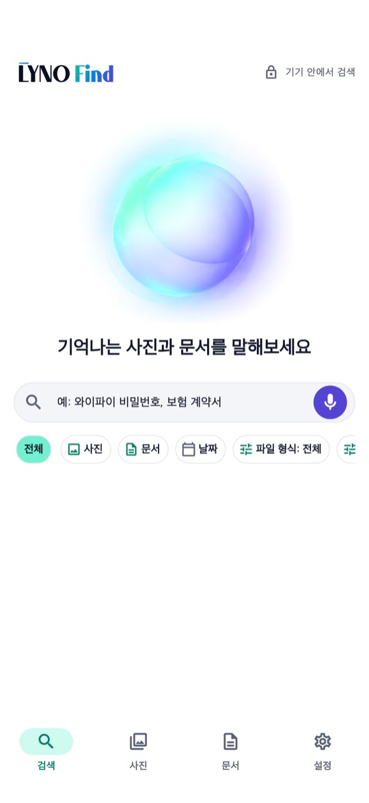
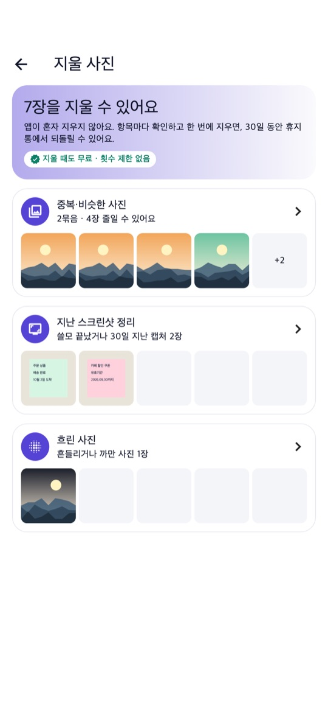
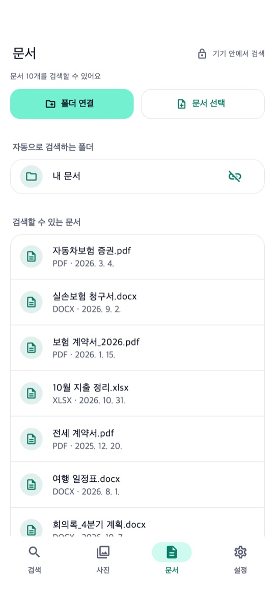
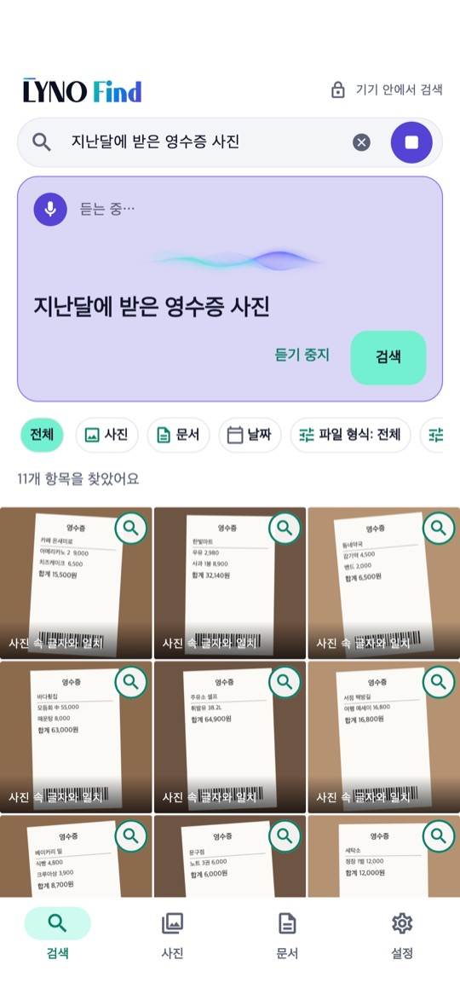

사진과 문서를,
한 번에 찾아요.
LYNO Find는 휴대폰 속 사진과 문서를 함께 검색하는 앱입니다. 영수증 사진 속 금액, 보험 서류의 글자, 지난달에 찍은 스크린샷처럼 기억나는 단어 하나로 찾을 수 있습니다.
무료 다운로드App Store
안드로이드Google Play 곧 출시
무료 · 회원가입 없음 · 아이폰 iOS 16 이상




기기 안에서만
사진과 문서를 읽고 검색하는 모든 일은 휴대폰 안에서 이루어집니다. 서버로 보내지 않고, 회원가입도 없습니다.
사진도 문서도 똑같이
사진 속 글자, 촬영 날짜, 비슷한 사진, 그리고 PDF·워드·엑셀·텍스트 문서의 내용까지 한 검색창에서 찾습니다.
말로도 찾기
“바닷가”, “강아지”처럼 사진에 담긴 장면을 말하거나 적으면 맞는 사진을 보여 줍니다.
지울 사진 정리, 끝까지 무료
중복·비슷한 사진, 쓸모 끝난 스크린샷, 흐린 사진을 찾아 모아 줍니다. 지우는 장수나 횟수 제한이 없고, 구독이나 결제를 요구하지 않습니다. 앱이 혼자 지우지 않고, 지운 사진은 30일 동안 되돌릴 수 있습니다.